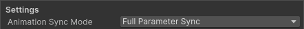
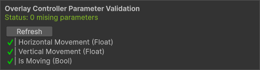
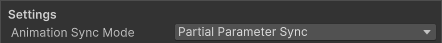
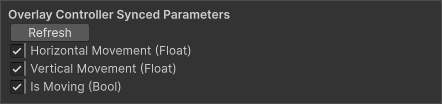

Character Overlay Layers
Character Overlay Layers allow you to add additional spritesheets that are layered above or below a character.
These work on both Unified and Layered Characters.
They are typically used for equipment, armor, or other optional elements for a character.
Overlay Layers use a completely separate spritesheet and Animator Controller.
This is the only instance where a spritesheet does NOT need to be the same size or follow the same layout as the Base Spritesheet.
Overlay Layer Animator Controllers can have their paramters be synced to the parameters of the Character Type Aniamtor Controller.
This means Overlay Layers can be synced to the character or be animated separately.
When To Use Overlay Layers
Overlay Layers are useful when you need to add additional elements to a charcter without modifying the base character.
Common Use Cases
| Use Case | Example |
|---|---|
| Equipment | Weapons, shields, any helds items |
| Additional Clothing | Armor, helmet |
| Effects | Auras, glow effects |
| Damage/Health Indicators | Scatches, blood, burn marks |
| NPC Identification and Indicators | Quest markers, team colors, enemy highlights |
How Overlay Layers Work
An Overlay Layer is a scriptable object that lives in your assets folder, this asset stores all info needed for an Overlay Layer to be used.
Every Character Overlay Layer contains its own:
- Spritesheet
- Animator Controller
The Animators parameters can be synchronized to the paramters in the Character Type Animator Controller.
This allow the Overlay Layer to be synced to the Charcter or animated on its own.
Creating an Overlay Layer
To create a new Overlay Layer asset:
Right clickthe Project window- Navigate to: Create > BlazerTech > Character Management System > Character Overlay Layers

Overlay Layer Setup
Character Type
Assign the Character Type asset that this Overlay Layer is meant to be used with.
Note
Overlay Layers can only be used alongside their assigned Character Type.
Animator Controller (Optional)
Assign the Animator Controller that will be used to animate the Overlay Layer.
Overlay Layers use a separate Animator Controller from the Character Type. This Controller can either be completely separate and play its own animations or have its paramters synced to the paramters of the Animator Controller in the assigned Character Type.
It's down to you to decide how you want to setup your Animator Controller.
Animation Sync Mode
Determines if and how the Overlay Layers Animator Controller is synchronized to the Character Type Animator Controller.
Full Parameter Sync
All parameters in the Overlay Layer Animator Controller are synchronized to the Character Type Animator Controller.

This option assumes that both Animator Controllers share the exact same parameters.
When this option is selected, a new section is exposed at the bottom of the inspector titled "Overlay Layer Parameter Validation".
This section compares the two Animator Controllers and shows you if the Overlay Layers Animator Controller is missing any parameters.

Partial Parameter Sync
Only selected parameters are synchronized to the Overlay Layer Animator Controller.

When this option is selected, a new section is appears at the bottom of the inspector titled "Overlay Controller Synced Parameters"
This section contains a list of all paramters in the Character Type Animator Controller.
If a parameter with the same name and type exists in the Overlay Layer Animator Controller then the parameter can be enabled here and will be synced during runtime.
If not the parameter cannot be enabled and a warning will appear stating the parmater does not exist in the Overlay Layer Animator Controller.

Not Synced
The Overlay Layers Animator Controller is not synchronized at all. This allows the Overlay Layer to be animated separately of the character.

Layer Sorting Mode
Decides how the Overlay Layer is rendered in relation to the Character.
In Front of Character
The Overlay Layer is rendered in front of the character.
Behind Character
The Overlay Layer is rendered behind the character.
Offset Mode
Sometimes the Overlay Layer might not line up correctly with your character. If it doesn't you can apply can offset to it.
The Offset Mode determines what unit of measurement is used to apply the offset.
Pixel Offset
Apply an offset to the Overlay Layer in the amount of Pixels specificed, which is then converted to Units at runtime.
Unit Offset
Apply an offset to the Overlay Layer in the amount of Units specified.
Overlay Layer Extensions
Overlay Layer Extensions let you add additional functionality to an Overlay Layer.
In the Inspector is an Overlay Layer Extensions list.
Each entry is a prefab that must contain a script that inherits from the OverlayLayerExtension class.